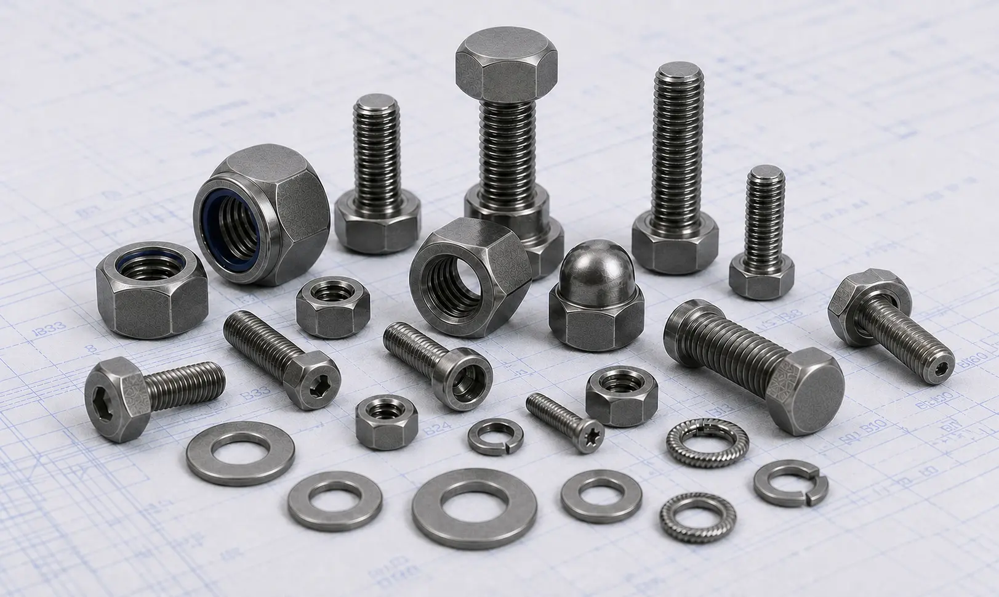

Monel 400 Fasteners including bolts, nuts, stud bolts, washers, and anchor bolts for marine, offshore, chemical processing, oil and gas, desalination, and power generation applications.
Monel 400 Fasteners are nickel-copper alloy fasteners known for their exceptional resistance to seawater, saltwater, hydrofluoric acid, alkalis, and various corrosive environments. Combining excellent mechanical strength with outstanding corrosion resistance, Monel 400 fasteners are widely used in marine, offshore, chemical processing, oil & gas, and power generation industries. Gururaj Infradesigns is a trusted Monel 400 Fasteners Manufacturer in India, supplying high-quality fastening solutions designed for demanding industrial applications.
Our product range includes Monel 400 bolts, nuts, stud bolts, anchor bolts, washers, and other industrial fasteners manufactured in accordance with international standards and project specifications.

Monel 400 is a solid-solution nickel-copper alloy containing approximately 63% nickel and 28-34% copper. The alloy offers excellent resistance to corrosion in both reducing and neutral environments while maintaining good strength and toughness across a wide temperature range.
As a premium grade within the broader range of Nickel Alloy Fasteners, Monel 400 Fasteners are commonly specified for marine equipment, desalination plants, chemical processing facilities, and offshore installations where conventional stainless steel fasteners may not provide sufficient corrosion resistance.
| Property | Details |
|---|---|
| Product | Monel 400 Fasteners |
| Grade | Monel 400 / UNS N04400 |
| Standards | ASTM B164, ASTM F467, ASTM F468 |
| Product Types | Bolts, Nuts, Stud Bolts, Anchor Bolts, Washers |
| Sizes | M3 to M100 and Custom Sizes |
| Thread Type | Metric, UNC, UNF, BSW |
| Forms | Hex Bolts, Hex Nuts, Stud Bolts, U Bolts, Socket Head Bolts, Washers |
| Condition | Hot Rolled, Cold Worked |
| Certification | Mill Test Certificates Available |
We manufacture and supply Monel 400 bolts including hex bolts, socket head bolts, and U bolts for applications requiring superior corrosion resistance and reliable mechanical performance. These bolts are widely used in offshore platforms, marine systems, and chemical processing equipment.
Our Monel 400 hex nuts are designed to provide secure and dependable fastening performance in aggressive environments. They are commonly used in marine hardware, pumps, valves, heat exchangers, and process equipment.
Monel 400 stud bolts are extensively used in pressure vessels, piping systems, flanged connections, and offshore installations. Their excellent resistance to seawater and chemical attack helps ensure long-term joint integrity.
We supply Monel 400 anchor bolts and washers for structural applications, equipment foundations, and industrial installations. These components provide reliable load distribution and corrosion resistance in demanding operating conditions.
Monel 400 offers outstanding resistance to flowing seawater and marine environments, making it one of the preferred materials for offshore and marine applications.
The alloy performs exceptionally well in acidic, alkaline, and saltwater environments where conventional materials may experience rapid corrosion.
Monel 400 Fasteners provide good tensile strength and durability, allowing them to perform reliably in heavy-duty industrial applications.
The material maintains its mechanical properties across a wide temperature range, making it suitable for both low and elevated temperature applications.
Its resistance to corrosion, erosion, and environmental degradation helps reduce maintenance requirements and extend equipment life.
| Element | Percentage (%) |
|---|---|
| Nickel | 63.0 Min |
| Copper | 28.0 – 34.0 |
| Iron | Max 2.5 |
| Manganese | Max 2.0 |
| Carbon | Max 0.3 |
| Silicon | Max 0.5 |
| Sulfur | Max 0.024 |
| Property | Typical Value |
|---|---|
| Tensile Strength | 550 MPa Min |
| Yield Strength | 240 MPa Min |
| Elongation | 35% Min |
| Hardness | 65-80 HRB |
| Density | 8.80 g/cm³ |
Monel 400 Fasteners are extensively used in shipbuilding, offshore platforms, seawater piping systems, and marine hardware due to their exceptional seawater corrosion resistance.
The alloy is widely used in chemical handling equipment, heat exchangers, storage tanks, pumps, and valves operating in corrosive environments.
Monel 400 bolts, nuts, and stud bolts are commonly specified for offshore drilling equipment, piping systems, and processing facilities where reliability is critical.
The material performs exceptionally well in desalination systems exposed to high concentrations of seawater and chlorides.
Power plants utilize Monel 400 Fasteners in equipment and systems requiring corrosion resistance and long-term operational reliability.
| Property | Monel 400 | Monel K500 |
|---|---|---|
| Alloy Type | Nickel-Copper Alloy | Age-Hardenable Nickel-Copper Alloy |
| Strength | Good | Higher |
| Corrosion Resistance | Excellent | Excellent |
| Seawater Resistance | Excellent | Excellent |
| Hardness | Moderate | Higher |
| Typical Applications | Marine, Chemical Processing | Offshore, Oil & Gas, Marine Hardware |
Both Monel 400 and Monel K500 Fasteners offer exceptional resistance to seawater, saltwater, and corrosive marine environments. Monel 400 is widely used for general marine and chemical processing applications due to its excellent corrosion resistance and good mechanical properties. Monel K500, on the other hand, provides significantly higher strength and hardness through age-hardening, making it suitable for offshore equipment, marine shafts, pumps, and high-load fastening applications.
As a trusted Monel 400 Fasteners Supplier in India, we maintain the capability to supply Monel 400 bolts, nuts, stud bolts, anchor bolts, and washers in various sizes and specifications. Our products support EPC contractors, OEM manufacturers, engineering companies, marine contractors, and industrial buyers requiring dependable fastening solutions.
We focus on consistent quality, timely delivery, and technical support to help customers meet project requirements across diverse industrial sectors.
Quality remains an integral part of our manufacturing and supply process. All Monel 400 Fasteners undergo inspection for dimensional accuracy, material integrity, thread quality, and compliance with applicable standards before dispatch.
As an ISO Certified Company, we are committed to supplying fastening solutions that meet industry requirements while maintaining consistency, reliability, and customer satisfaction.
Selecting the correct fastener material requires evaluating factors such as corrosion exposure, operating temperature, mechanical loads, and service environment. Choosing the right alloy helps improve equipment reliability, safety, and long-term performance. Our team can assist in selecting suitable Monel 400 bolts, nuts, stud bolts, anchor bolts, and washers based on your project specifications and application requirements. We support OEM manufacturers, EPC contractors, engineering firms, and industrial buyers with dependable fastening solutions for critical industrial applications.